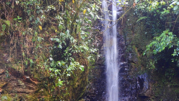
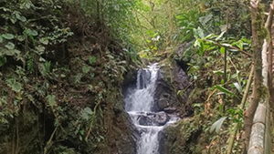
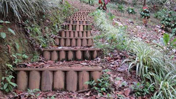

Descripcion
Las Cascadas La Estrella y Sutú son dos impresionantes caídas de agua ubicadas en el municipio de Mistrató, en el departamento de Risaralda, Colombia. Situadas a menos de un kilómetro del parque principal de Mistrató, en la vereda La Estrella, estas cascadas ofrecen un entorno natural ideal para diversas actividades ecoturísticas.

Descripcion
La Reserva Natural Barcinal es un santuario ecológico, administrada por la comunidad local, esta reserva ofrece a los visitantes la oportunidad de sumergirse en un entorno natural rico en biodiversidad.

Descripcion
Este espacio ofrece a los visitantes un sendero ecológico que permite explorar la diversidad de flora y fauna de la región, con más de 15 especies de heliconias y otras plantas nativas.